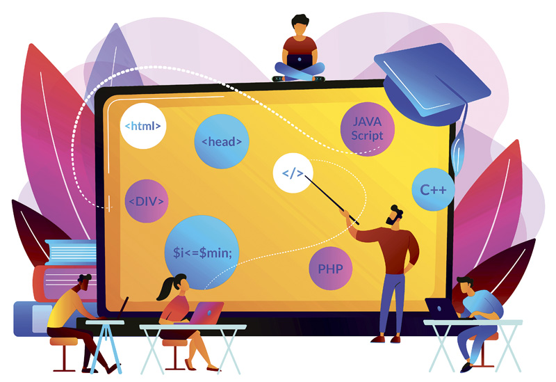
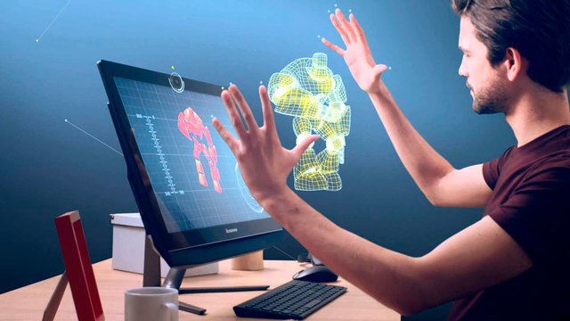

Fundamentos de HTML
La mayoría de las aplicaciones de escritorio que pueden leer y escribir ficheros utilizan un formato de fichero especial. Por ejemplo, Microsoft Word entiende los ficheros .doc y Microsoft Excel entiende los .xls. Estos ficheros contienen las instrucciones para reconstruir el documento cuando se vuelve a abrir y para saber cuál es su contenido, además de los "metadatos" sobre el artículo, como por ejemplo el autor, la fecha de la última modificación del documento e incluso cosas como la lista de cambios realizados con el fin de poder recuperar todas sus diferentes versiones. Esto de acuerdo al autor Mark Norman Francis.

Interacción Humano Ordenador
La Interacción Humano-Computadora se convirtió oficialmente en una disciplina con el advenimiento de la computadora personal. Con el primer Macintosh, IBM PC 5150 y Commodore 64 utilizados en la oficina, la gente empezó a darse cuenta de cómo esta transición afectará no sólo a su trabajo sino a sus vidas en general. Los PCs fueron lanzados con muchas nuevas características como procesadores de texto, facilidades de juego y ayudas de contabilidad. Con el tiempo, su nivel de sofisticación aumentó hasta el punto en que el objetivo era hacer que la interacción hombre-computadora se asemejara a la interacción entre humanos, de la forma más natural y sin fisuras posible.
